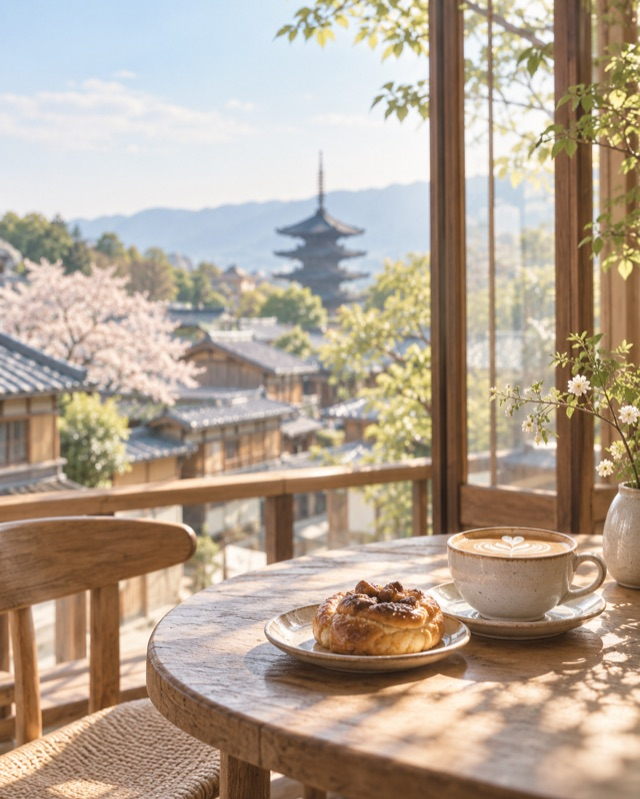

見つけた「行きたい」を、旅にする。
行きたいを、 とっとく。
InstagramやGoogleマップで見つけた
「いつか行きたい場所」を、ひとつにまとめて保存。
あとで見返して、整理して、
次のおでかけにつなげます。
iPhone 向け 無料
-
ブルーボトルコーヒー 清澄白河カフェ・東京Instagram
-
直島絶景・香川Web記事行った
-
teamLab Planetsアート・東京X行く予定
-
サントリーニ島 イア絶景・ギリシャGoogle Maps
-
金沢 ひがし茶屋街街歩き・石川Instagram
- 東京旅行 2日目3件の行き先
- 春のアート展4月4日〜29日・上野
- 週末のクラフト市4月12日・清澄白河
-
見つけた瞬間に保存
行きたいを逃さない
-
地図で再発見
近くの保存スポットに気づける
-
旅行の行程づくり
ひとりでも、友だちと
-
イベントもまとめて管理
展示・フェス・グルメも
-
01
見つけたらすぐ保存
Instagram や Google Maps、Web記事、SNS で見つけたスポットやイベントを、共有メニューからワンタップで保存。
-
02
好きなように整理
タグやカテゴリ、「行きたい・行く予定・行った」のステータスで、自分らしく整理。とりあえず保存して、あとから整えられます。
-
03
地図で見つける
旅行先や現在地の近くで、以前保存したスポットを地図上で再発見。「この辺に何か保存してたはず」に応えます。
-
04
旅の行き先を計画
行き先と日程を決めたら、保存した場所から候補を選んで日ごとの行程に。たたき台を作って、順番や時刻の目安を調整できます。友だちを招待して、一緒に計画することも。
How it works
旅は、
こんなふうに。
気になるものとの出会いから、実際の旅の思い出になるまで。Tottoki がずっと寄り添います。
-
01
発見
SNS や Web で、気になるスポットやイベントに出会う
-
02
保存
共有メニューから、ワンタップで Tottoki へ
-
03
整理
タグやカテゴリで、自分らしく整理する
-
04
再発見
地図やリストで、保存した「行きたい」に再会する
-
05
計画
旅行の行程に、行きたい場所を組み込む。友だちと一緒に計画も
-
06
訪問
ついに、その場所へ。「行きたかった」が「行ってよかった」に。
Inspiration
行きたいであふれる、
やさしい世界。
カフェ、絶景、アート、イベント、週末の小さな旅。まだ見ぬ素敵な場所が、あなたを待っています。
-

カフェやさしい時間が流れるカフェ京都 -
絶景
いつか見たい、あの絶景瀬戸内 -
アート
心が動くアート体験東京 -
週末旅行
週末で行ける、小さな旅金沢 -
温泉
湯けむりの町で、ひと休み箱根 -
イベント
夏の夜空を見上げる、花火大会長岡 -
展示
会期中に行きたい、あの展示上野 -
街歩き
坂道と路地をたどる街歩き尾道
Pricing
料金について
Tottoki は無料でダウンロードできます。 保存・整理・地図・カレンダー・旅行の計画まで、いまある機能はすべて無料でお使いいただけます。
- 保存した内容を販売したり、広告に使ったりしません
- アカウントとデータはいつでも削除できます
どこから保存できますか？
Instagram、Google Maps、Safari など、共有ボタンのあるアプリから保存できます。共有メニューで Tottoki を選ぶだけで、アプリを開かずにその場で保存できます。タイトルや画像は URL から読み取り、読み取れなかった項目はあとから書き足せます。
Google Maps の保存リストをまとめて取り込めますか？
はい。Google Takeout で書き出したファイルから、Google Maps のリストやスターを付けた場所をまとめて取り込めます。プロフィールの「Google マップから取り込む」から、取り込みたいリストや場所を選べます。Google Maps との自動同期や、Instagram の保存リストの一括取り込みには対応していません。
友だちと旅行の計画を共有できますか？
はい。旅行の招待リンクを送ると、参加した人と行程を共有できます。「編集できる」「見るだけ」を選べるので、一緒に行き先を追加したり、できあがった計画を見てもらったりできます。保存した場所やイベントを、ひとつずつリンクで送ることもできます。
イベントの日程はどこで確認できますか？
「イベント」タブのカレンダーに、保存した展示やイベントの開催日が表示されます。旅行の日程も同じカレンダーから確認でき、その日の旅行の行程を開けます。
アカウント登録は必要ですか？
アプリのご利用には、メールアドレスでのアカウント登録が必要です。Instagram や Google Maps のアカウントと連携する必要はありません。
どの端末で使えますか？
iPhone（iOS 16.4 以降）でお使いいただけます。App Store から無料でダウンロードできます。Android 版はまだありません。
保存した場所が、ほかの人に見られることはありますか？
保存した内容は、あなたが共有しない限り、ほかの利用者には見えません。項目をリンクで送ると、そのリンクを知っている人に内容が表示されます。旅行に招待した人には、参加した旅行の行程と、そこに追加した項目が表示されます。リンクを受け取った人は、アプリがなくても Web ページで内容の一部を見られます。送ったリンクはいつでも止められます。詳しくはプライバシーポリシーをご覧ください。
現在地は保存されますか？
現在地は、近くの保存スポットを探したり、地図を現在地に動かしたりするために端末内で使います。現在地そのものを Tottoki のサーバーへ送信・保存することはありません。位置情報を許可しなくても、保存・整理や旅行の計画を利用できます。
「Tottoki」はなんと読みますか？
「とっとき」と読みます。「とっておき」のくだけた言い方で、見つけた「行きたい」を、行ける日までとっておく場所という意味をこめています。